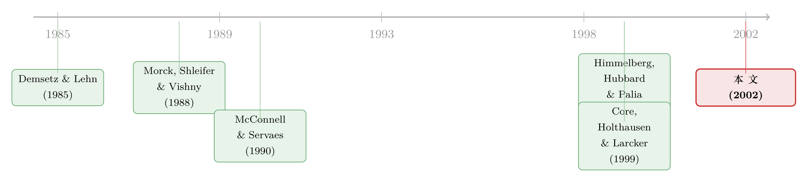

强制老板多持股，公司真的会变好吗？
本文读的是 Core & Larcker (2002, Journal of Financial Economics)：他们找到一批主动给高管立下「最低持股要求」的公司，发现这些公司在立规之前股价跑得差、高管持股也低；而在计划生效后的两年里，高管持股显著上升，超额会计回报和超额股票回报也都更高。换句话说——把持股从「过低」往上推，公司业绩真的改善了。
1 一个吵了二十年都没吵明白的问题
先抛一个看似简单、却让公司金融研究者们争论了几十年的问题：老板多持有一点自家股票，公司会不会经营得更好？
直觉上，答案似乎是肯定的。一个手里攥着大把股票的 CEO，和公司股东坐在同一条船上，他偷懒、挥霍、修建商业帝国的冲动都会被「自己的钱也在里面」这件事按住。这正是 Jensen 与 Meckling 半个世纪前奠定的代理理论的核心直觉（关于这条主线，可参见《债务这副药，为什么不能全吃？——重读 Jensen 和 Meckling 五十年》）。
可问题恰恰在于，数据并不配合这个直觉。 文献里站着两支针锋相对的队伍，而且两支队伍各自都有顶刊级的代表作。
一边是 Morck, Shleifer and Vishny (1988)：他们发现很多公司的管理层持股「太低了」，把持股提上去、业绩就会好——言下之意，市场上充斥着没把激励安排到位的公司。另一边是 Demsetz and Lehn (1985)：他们说，如果持股本来就是公司最优选择出来的（大公司、波动大的公司，本就该有不同的持股结构），那么在均衡里，持股和业绩之间根本不该有任何关系。后来 Himmelberg, Hubbard and Palia (1999) 沿着这条线做下去，结论也是——一旦你正视持股的内生性 (endogeneity)，持股与业绩之间那点相关性就所剩无几了。
两支队伍的分歧，表面上是「有没有关系」，骨子里却是对一个隐含假设的不同押注：纠正一份次优契约的调整成本，到底有多大？ Morck 等人暗含假设它大到公司根本没法最优缩约，所以有些公司就这么一直坑着股东；Demsetz 与 Lehn 则假设它为零，公司可以随时随地重新缩约，于是均衡里永远看不到偏离。
你站在哪个极端，就决定了你这篇实证研究怎么设计、结果怎么解读。难怪二十年没有共识。
2 不站队，而是走中间那条路
Core 与 Larcker 的聪明之处，是不在这两个极端里二选一，而是各让一步，捏出一个更现实的中间假设：
公司在签约时确实是按最优来安排高管持股的（这一点认同 Demsetz-Lehn）；但重新缩约是有交易成本的，不可能时时刻刻进行（这一点认同 Morck 一派）。
这个中间假设一旦立住，一连串推论就顺下来了。因为持股是周期性地被重新优化的，所以在任意一个横截面上、控制住决定最优持股的那些因素之后，你不该看到持股与业绩的关系——这和「无关系」那一派对上了。但又因为缩约不是连续的，公司的持股水平会慢慢偏离最优值。那么自然地：那些已经偏到最优值以下的公司，如果把持股提上去，业绩就应该改善。
接着，一个更妙的筛选逻辑出现了：在这些偏低的公司里，会有一小撮——业绩改善的好处大到足以值回那笔重新缩约的交易成本——主动出手，强制高管增持。
于是问题被转化成了一个可操作的命题：去找那些真的下手强制增持的公司，看看它们事后的业绩。这就是本文的全部赌注所在。
3 一个近乎完美的样本：目标持股计划
那么，到哪里去找「主动强制高管增持」的公司？
答案是 目标持股计划 (target ownership plans)。这是 1990 年代初开始流行的一种公司治理安排：董事会白纸黑字规定，高管必须直接持有（注意：是直接持股，期权不算数）一个最低数量的本公司股票，通常表达为底薪的某个倍数。
文中引了 Campbell Soup 1993 年的委托书作例子：到 1994 年底，全部 29 位高管外加约 40 位主管，都必须按职位高低、持有相当于底薪 0.5 到 3 倍的 Campbell 股票。
这个样本好在哪？好在因果方向被钉死了。是董事会在强制高管增持，所以事后的业绩变化，多半能归因于持股带来的激励变化。这跟「高管自愿增持」的样本有本质区别——如果用自愿增持的样本，你永远分不清到底是「增持改善了业绩」，还是「高管预见到业绩要好、提前埋伏建仓」（这正是 Kole (1996) 担心的那种「拿私人信息内幕交易」）。董事会的这只手，替研究者隔离掉了这层私人信息的污染。
本文据此提出三个层层递进的假设：
- H₁：采纳目标持股计划的可能性，与事前的股价表现、高管持股水平负相关——也就是说，是「业绩差 + 持股低」的公司才会立这个规矩。
- H₂：计划采纳后，高管持股显著上升（用来排除「这只是个装样子的象征性计划」这个替代解释——Pfeffer (1981) 笔下管理层糊弄投资者的把戏）。
- H₃：采纳计划会对后续的经营与股市表现产生正面影响。
注意 H₂ 的设计有多关键。如果计划只是「象征性 (symbolic)」的、并不真的逼高管掏钱，那持股就不会变；如果是管理层凭私人信息怂恿董事会立规，那理性的高管早就该在公告前增持、事后持股位置不会变。只有「实质性 (substantive)」的强制增持，才会让事后持股真的往上走。 H₂ 一旦成立，就同时打死了好几个竞争性故事。
4 样本与那把丈量「持股是否偏低」的尺子
样本是 195 家在 1991–1995 财年间采纳目标持股计划的公司，横跨 40 个行业，在化工、机械、公用事业、银行、保险几个行业略有集中。
文中先讲清楚了时间轴的记号：委托书披露计划的那个财年记为 year 1，委托书所描述的那个财年（即真正发生计划采纳的年份）记为 year 0，往前数 year -1、year -2，往后数 year 2。
先看描述性证据，几个数字很说明问题：
- 对披露了目标的 138 家公司，CEO 的最低持股要求中位数是底薪的 4.0 倍，其他高管是 2.5 倍；给的达标期限中位数约 5 年。
- 而实际持股呢？CEO 持股中位数是底薪的 5.6 倍（均值被极端值拉到 32.2 倍），其他高管中位数 2.4 倍（均值 4.7 倍）。
- 看上去多数 CEO 似乎已经达标了？但逐人去比就露馅了：38% 的 CEO 实际持股低于最低线，49% 的其他高管（加权平均口径）低于最低线；只要看「至少有一位非 CEO 高管不达标」，比例飙到 81%；把 CEO 也算进来，84% 的公司里至少有一位高管够不着自己的目标。
也就是说，这些计划绝大多数不是橡皮图章——它们确实把一批不达标的高管摆上了「必须增持」的位置。
那么，怎么客观判断一家公司的持股是不是「偏低」？这是全文识别的命门所在。作者构造了一个基准持股模型（仿照 Demsetz-Lehn 的思路），把持股对一组「应该决定最优持股」的变量做回归，再看残差——残差为负，就意味着实际持股低于这家公司「本该有」的水平。
被解释变量取了对数 Log(stock value/salary)，这样做的好处是：残差可以直接读成「实际持股偏离预期持股的百分比」。模型如下（本文的式 (1)）：
这个基准模型用普通最小二乘 (OLS) 估计，估计样本是把 195 家计划采纳公司 year 0/1/2 的持股数据，与 ExecuComp 里 1992–1997 年的高管持股数据汇合 (pool) 在一起。模型对 CEO 和其他高管都高度显著（p < 0.001）。
有了这把尺子，H₁ 的检验就清楚了：采纳计划的公司，是不是同时在「事前股价（行业调整后回报）」和「持股残差」这两个维度上都偏低？ 作者把这两个变量喂进一个判别（区分采纳公司 vs. 对照公司）的模型里去看。
这里有一个常被忽略的细节：作者用的「行业调整回报」是把 year -2、year -1 两年的股价回报，减去同两位 SIC 行业、同期的中位数回报。低于行业基准的回报，被当作「潜在治理问题」的信号——这套思路 United Shareholders Association (1992) 在用，Core, Holthausen and Larcker (1999) 也实证验证过。
5 三个假设，三连中
故事讲到这里，结果其实已经呼之欲出，但还是要把量级摆出来：
关于 H₁。 采纳目标持股计划的公司，事前确实是「双低」的：股价跑输行业基准，且高管持股低于基准模型给出的预期水平。这与「董事会在察觉到治理问题后才立规」的图景一致。
关于 H₂。 这是全文最关键的一击。在计划采纳后的两年里，高管的（基准调整后的）股权激励显著上升。脚注里作者还补了一句很重要的稳健性：如果把持股口径换成「持股市值的对数」，或者干脆换成「股票 + 期权组合提供的总激励的对数」，结论定性不变——采纳公司的高管事前激励显著偏低，事后两年显著回升。这就把「象征性计划」「管理层凭私人信息埋伏」这些替代解释挡在了门外。
关于 H₃。 业绩确实跟着改善了：计划采纳后的两年里，超额会计回报 (excess accounting returns) 在统计上更高；而超额股票回报则集中体现在「公告计划的那个财年的头六个月」里显著为正。
把三步连起来，本文的核心叙事就完整了：一批持股过低、业绩落后的公司，被董事会强制把高管持股从次优往上推，随后业绩真的改善了。 这恰恰是「中间路线」假设所预言的——在那些偏离最优值以下的公司里，增持是能创造价值的。
注意本文落点的精准：它没有宣称「持股越多业绩越好」这种笼统断言（那会重新掉进 Demsetz-Lehn 的陷阱）。它只说，对那些处在最优值以下的公司，强制增持有用。这是一个被限定了适用范围的、因而更可信的结论。
6 文献脉络
把这条线索捋一遍，会看到一个漂亮的「正—反—合」结构。
正题是 Demsetz and Lehn (1985)：持股是内生最优的，与业绩无关。反题是 Morck, Shleifer and Vishny (1988) 与随后的 McConnell and Servaes (1990)——后者发现，只要管理层持股低于 50%，增持与公司价值之间就是正相关的。两派吵得不可开交。
到了世纪之交，Himmelberg, Hubbard and Palia (1999) 把内生性问题摆到台面上，几乎是替「无关系」一派盖了棺：一旦正确处理内生性，均衡持股与业绩的关系就消失了。

Core 与 Larcker (2002) 的位置，正是在这场僵局上找到了一个第三视角。他们没有去和内生性硬碰硬地做工具变量，而是借「目标持股计划」这一外生的契约冲击，专挑那些偏离最优值以下的公司来看——既承认持股内生最优（接住 Demsetz-Lehn），又承认调整有成本、偏离会发生（接住 Morck 一派）。这套思路与他们自己更早的 Core, Holthausen and Larcker (1999) 一脉相承：治理弱、激励差的公司，业绩会被拖累。而本文的基准持股模型，骨子里又是 Demsetz and Lehn (1985)、Smith and Watts (1992)、Baker and Hall (1998) 那套「持股的决定因素」回归的延续。
7 评论与延伸（Q&A + 研究方向）
(a) 几个可能的疑问
Q：业绩改善会不会只是「均值回归」，而不是增持的功劳？
这是对本文识别最致命的担忧，也是我最在意的一点。样本是按「事前业绩差」挑出来的——而业绩差的公司，本就倾向于在随后几年「回归均值」、自然反弹，哪怕什么都不做。本文虽然用了行业调整回报来部分对冲，但「采纳公司」与「对照公司」之间，事前那道业绩鸿沟本身就可能预示着不同的回归速度。这跟《炒掉一个 CEO 之后，公司真的变好了吗——还是只是「运气回来了」》讨论的是同一类陷阱：你以为是干预起了作用，其实可能只是运气回来了。本文最有力的反驳，是 H₂——持股确实实质性地上升了，给「增持→业绩」这条机制链补上了中间环节；但严格地把均值回归与处置效应分离开，本文做得并不彻底。
Q：那六个月的正向超额股票回报，到底是「市场认可增持」，还是别的东西？
公告窗口的正回报可以有多种读法。它可能是市场对「治理改善」这一信号的定价，也可能掺进了同期其他公司决策的信息。本文把效应锁定在「公告财年的头六个月」，时点上算克制；但短窗口事件研究始终绕不开「同期混杂事件」的质疑。
Q：用「持股市值 / 底薪」当持股度量，合理吗？这和文献常用的「持股比例」不一样。
这是本文一个刻意的选择，理由是：目标持股计划本身就是按「底薪的倍数」来规定的，所以度量口径与契约口径对齐，反而更贴切。代价是它和 Morck 等人用的「持股占公司比例」不可直接比较。好在作者做了稳健性——换成持股市值对数、或股票+期权总激励对数，结论不变。
Q：会不会是「好公司才请得起、也才舍得立这种规矩」的选择效应？
方向恰好相反。本文证据显示，是业绩差、持股低的公司才去立规（H₁）。所以传统意义上「优质公司自选择」的担忧在这里不成立；真正要防的，是上面说的均值回归，而非「好公司挑了好制度」。
Q：高管被逼着增持，会不会反而带来坏处——比如持股太集中、风险厌恶上升、不敢上好项目？
这是代理理论里「激励是把双刃剑」的经典担忧（一个高管如果财富过度押在自家股票上，可能会因为分散化不足而变得过度保守）。本文的样本是从过低往上调，落在「增持有益」那一段，所以没触到这个反面;但这也提醒我们，本文的结论有明确的适用边界，不能外推到「持股已经够高、再往上推」的情形。
Q：这篇 2002 年的论文，对今天还有什么用？
它的方法论价值经久不衰：当一个变量（持股）内生、而你又想识别它的因果效应时，与其和内生性硬刚，不如去找一个把这个变量外生地往某个方向推的契约/制度冲击，并把样本限定在该冲击真正起作用的子集上。这套「找一个把次优往最优推的外生推力」的思路，今天在公司治理、ESG 强制披露、薪酬监管等领域依然好用。
(b) 几个可能的研究问题与提案
1. 强制增持对「债权人」是好是坏？
【经济故事】股权激励上升会让高管更向股东靠拢，但股东与债权人的利益并不总一致——增持可能诱发风险转移，损害债权人。目标持股计划是个干净的冲击，正好可以看公司债利差、CDS 在计划采纳前后怎么动。 【可行性】中。需要把本文（或更新）的目标持股计划样本，匹配到 TRACE 的公司债成交与评级数据；识别上可用计划公告做事件研究。难点是样本年代偏早（1990 年代初），TRACE 覆盖要到 2002 年后才完整，可能要把样本延到 2000 年代重新采集计划。
2. 外资持股比例，会不会改变这类计划的有效性？
【经济故事】外资机构往往是更主动的治理监督者。同样一份强制增持计划，在外资持股高的公司里，是否更容易被「实质化」、业绩改善更明显？这把本文的治理故事和外资监督渠道接到了一起。 【可行性】中到高。需要计划样本 + 13F/各国持股数据库；用外资持股做异质性切分（交互项）即可，识别强度取决于外资持股本身是否外生——可借助指数纳入等准自然实验来缓解。
3. 把「均值回归」彻底从「处置效应」里剥出来。
【经济故事】本文最大的软肋就是均值回归。能不能用一个事前业绩、事前持股都匹配、但没有采纳计划的对照组（倾向得分匹配 + 安慰剂检验），把自然反弹那部分干净地减掉，看处置效应是否还在？ 【可行性】高。这几乎是纯方法论的复刻升级：用 ExecuComp 全样本构造匹配对照组，做 staggered DiD（注意近年关于交错 DiD 的修正，参见《当「更稳健」的设计悄悄把符号弄反了——重读交错双重差分》），并报告事前平行趋势。数据现成，doable。
4. 强制增持与「期权重定价」是替代还是互补的治理工具？
【经济故事】当高管激励被侵蚀时，公司有两条路：强制增持，或给「水下期权」重新定价。这两种工具背后的治理含义截然不同（一个让高管掏钱、一个给高管送钱）。哪类公司选哪条路？事后业绩有何差异？ 【可行性】中。需同时识别目标持股计划与期权重定价两类事件（后者可参见《给「水下」期权重新定价，到底是老板在赖着不走，还是公司在自救？》），在公司治理变量上做对照。难点是两类事件的样本交集可能很小。
8 我的判断与参考文献
贡献。 这篇论文最漂亮的，不是某个惊人的系数，而是问题的转化方式。面对一个被内生性搅了二十年的老问题，作者既不假装内生性不存在，也不一头扎进工具变量的泥潭，而是退一步，找到「目标持股计划」这个把次优持股外生地往最优推的契约冲击，并且只在「该冲击真正起作用」的子集——持股偏低的公司——上做文章。结论因此被限定得恰到好处：不是「持股越多越好」，而是「对偏低者，增持有益」。这是一种成熟的、知道自己边界在哪里的实证。
对识别的担忧。 我最不放心的仍是均值回归。样本天生是按「事前业绩差」选出来的，而业绩差本身就预示着随后的自然反弹。作者用行业调整、用 H₂ 的持股实质性上升来侧面支撑机制链，但没有一个事前业绩/持股都精确匹配的对照组来把「自然反弹」这部分干净地扣掉。其次，公告窗口的短期超额回报，对混杂事件的稳健性也偏弱。
后续想看到的。 一是用现代的 staggered DiD + 匹配对照组重做识别，正面回应均值回归；二是把因变量从「股东视角的业绩」拓宽到债权人、员工、投资政策等多个维度——强制增持改变的是激励结构，而激励结构的外溢，远不止股价那一格。
参考文献
- Baker, G., Hall, B. (1998). CEO incentives and firm size. NBER Working Paper 6868.
- Core, J., Guay, W. (1999). The use of equity grants to manage optimal equity incentive levels. Journal of Accounting and Economics 28, 151–184.
- Core, J., Holthausen, R., Larcker, D. (1999). Corporate governance, CEO compensation, and firm performance. Journal of Financial Economics 51, 371–406.
- Demsetz, H., Lehn, K. (1985). The structure of corporate ownership: causes and consequences. Journal of Political Economy 93, 1155–1177.
- Himmelberg, C., Hubbard, G., Palia, D. (1999). Understanding the determinants of managerial ownership and the link between ownership and performance. Journal of Financial Economics 53, 353–384.
- Jensen, M., Murphy, K. (1990). Performance pay and top-management incentives. Journal of Political Economy 98, 225–264.
- Kole, S. (1996). Managerial incentives and firm performance: incentives or rewards? Advances in Financial Economics 2, 119–149.
- McConnell, J., Servaes, H. (1990). Additional evidence on equity ownership and corporate value. Journal of Financial Economics 27, 595–612.
- Morck, R., Shleifer, A., Vishny, R. (1988). Management ownership and market valuation: an empirical analysis. Journal of Financial Economics 20, 293–315.
- Smith, C., Watts, R. (1992). The investment opportunity set and corporate financing, dividends and compensation policies. Journal of Financial Economics 32, 263–292.